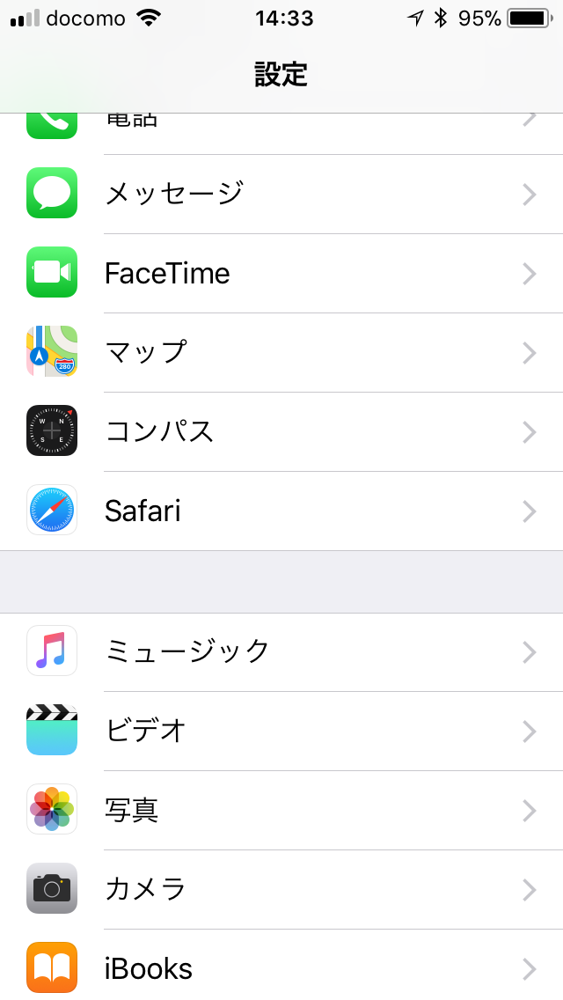
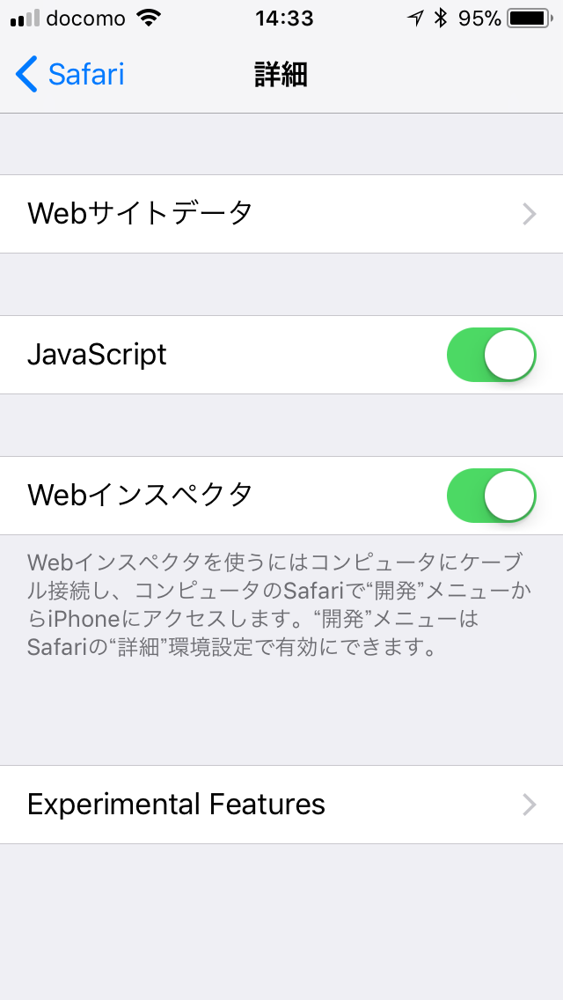

WebGPUをiOS 11で有効にする方法¶
iOS 11に搭載のWebブラウザSafariには、実験的機能としてWebGPUが搭載されています。WebGPUにより、WebDNNの動作は大幅に高速化されます。 初期設定ではWebGPUは無効になっているため、このページでは、WebGPUを有効にする方法を説明します。
設定を開き、Safariをタップ

詳細をタップ

Experimental Featuresをタップ

WebGPUをONにする

Safariが起動している場合、一旦終了する

(ホームボタンをダブルクリック、Safariの画面を上にスワイプ)
これにより、SafariでWebGPUが利用できるようになります。
注意：WebGPUは実験的機能であり、ブラウザの動作を不安定にする可能性があります。WebGPUを使用したい場合以外は無効化しておくことが望ましいです。